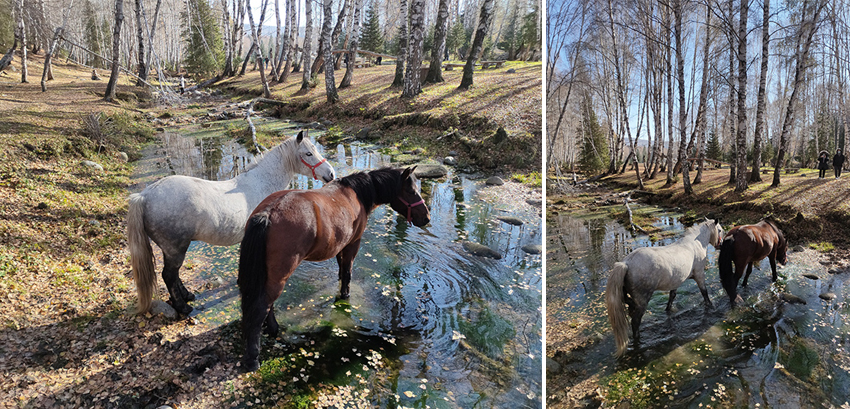
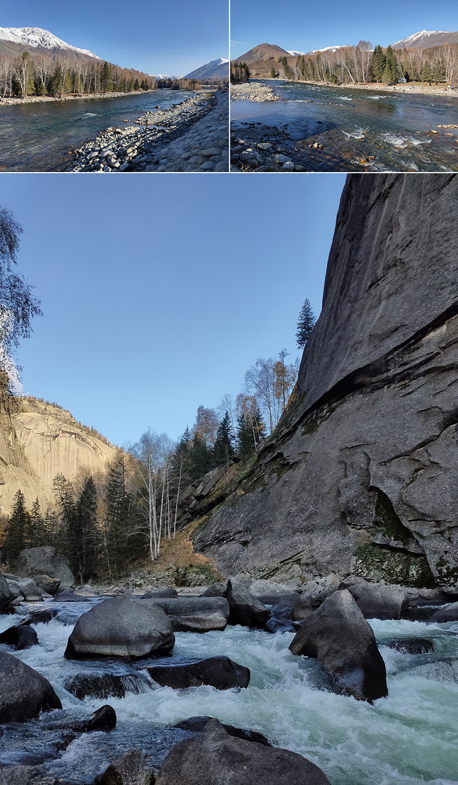
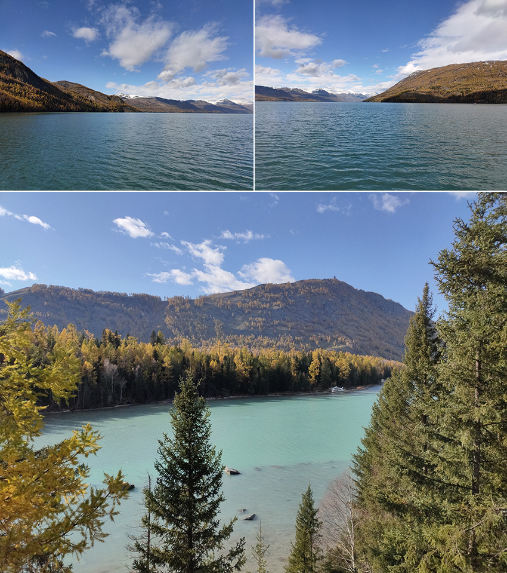
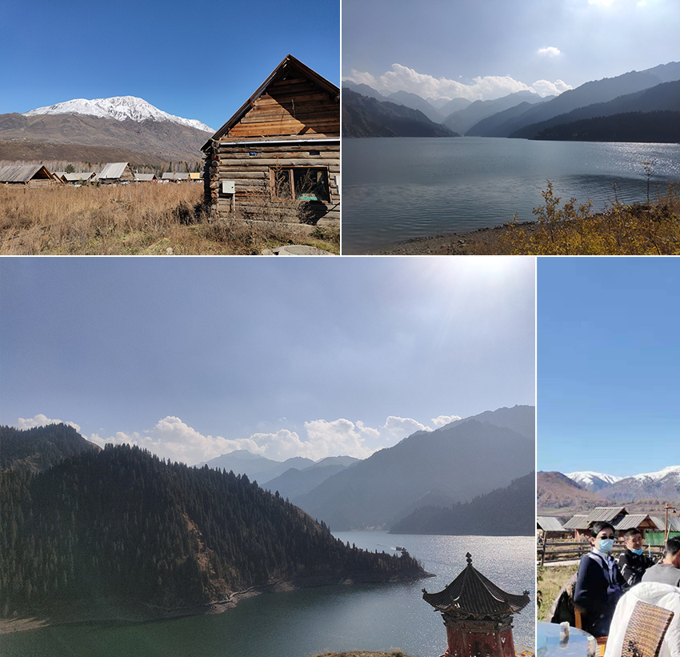

當我獨自漫步在白樺樹林中，成對的馬從我身旁疾馳而去，牠們呼嘯而過的身影如此迷人，讓我不由自主地緊隨其後，我發現牠們停在溪邊，啜飲林中小溪的水，於是我躡手躡腳輕輕地靠近牠們，牠們偶爾抬起頭望向我，保持相當程度的警戒心，讓我不敢再往前。
前幾天，《阿爾泰山》下了場暴雪。小溪水匯集了融化後的雪水，之後又將流入《額爾濟斯河》，享用過冰涼清澈純淨的溪水後，牠們揚長而去，繼續奔馳在湛藍天空下。
|  |
此時正值10月，雖是秋天，但天上已開始飄著片片雪花。我抬頭仰望天空，雪花彷彿輕柔的羽毛片片飄落下來。下雪後的空氣，彷彿被過濾了，是那樣的清新、純淨、自然。我長途跋涉，千里迢迢來到《新疆》，只為親眼目睹這個擁有豐富多元面貌的自然與歷史文化景區。
獨自一人開車，我沿著《准葛爾盆地》行駛，這段路程長達8小時，公路兩旁盡是荒涼的沙漠。抵達《阿爾泰山》後，稍作休息，我繼續駕車，前往色彩鮮豔彷彿畫作的《額爾濟斯河》大峽谷。這些地名聽來都很熟悉，只因曾在中學時代的地理課本上學習過。如今親眼目睹，心情格外興奮。我獨自一人，安安靜靜地散步在河谷中，欣賞這條中國唯一自東向西流，最後注入「北冰洋」的清澈河水。
|  |
這裡已鄰近【俄羅斯】與【哈薩克斯坦】的國界線。歷經漫長的車程，到達《喀納斯湖》。此處位於阿爾泰山的隱密森林中，景色自然未受人為污染，原始而質樸。湛藍的天空將起伏的山峰襯托地格外動人。阿爾泰山拔地而起，彷彿斜插入雲的山峰上白雪皚皚，泛黃與翠綠的樹葉糾纏盤繞、漫無邊際，彷彿一張巨大的綠色斯絨 披覆在湖邊群峰。
我選擇搭乘遊艇環湖，風輕浪柔，在清澈水面上航行。兩天前，暴雪剛過，整個山區可見潔白的積雪，銀光耀眼。雖還是深秋時節，但此時氣溫已逼近2度。已好久没有感受過 沁人心脾的冷空氣 輕拂臉面的感覺。
|  |
進入國家公園後，所有遊客都要搭乘遊園車前往景區。一個年輕的女孩坐我身旁。我的座位﹝靠走道﹞，而她的座位﹝靠窗﹞。每當我要欣賞窗外的風景，視線餘光無可避免會看到她。途中，她數度回頭，和身後的同伴聊天，討論最近日本某女星結婚的事情。路過景點，遊園車讓我們下去走走，親身感受壯麗美景。我卻聽到她說：「天氣冷，不想下車」，說實話，我為她感覺遺憾。每一位遊客，都得在搭飛機、候機及開車、搭大巴上耗費漫長的時間，才能來到新疆。有些人可能終其一生，都沒機會造訪這裡。而她卻把這麼寶貴的時光，用來划手機和追星。
某天，攀登阿爾泰山後，山友們圍成一桌在戶外吃飯 (詳見照片)，能在藍天白雲下的阿爾泰山頂吃飯，多麼難得。但我發現幾乎全桌的人都在玩手機！！然後討論政治議題。這舉動讓我詫異萬分，寧願在如此美麗的阿爾泰山上划手機、討論政治議題。卻不願意靜下心，讓自己活在當下，好好享受身邊此時此刻！這或許是現代人的文明病吧！
|  |